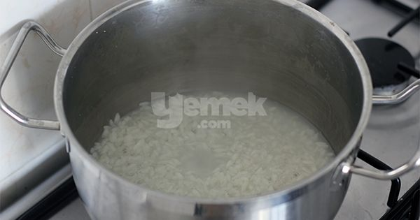
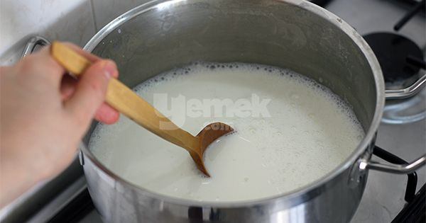
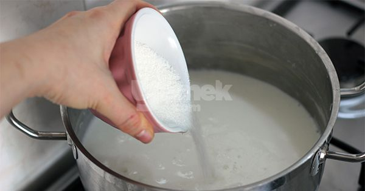
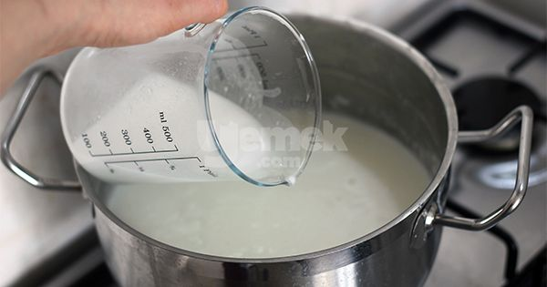
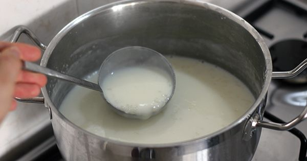
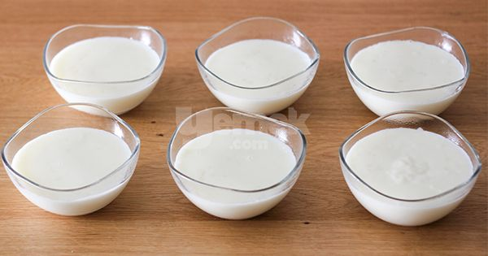
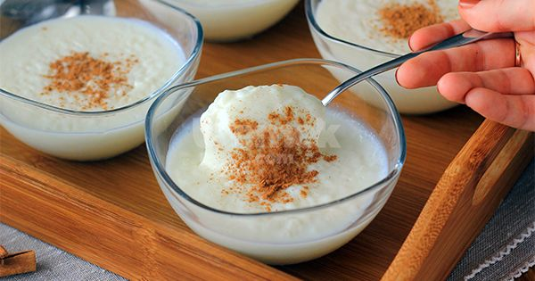

Tam Kıvamında: Sütlaç Tarifi
anasayfa
tarif gönder
iletişim

Sütlaç Tarifi İçin Malzemeler
1/2 çay bardağı pirinç(3 yemek kaşığı)
2 su bardağı sıcak su
1 litre süt
1 su bardağı toz şeker(200 gr)
1 çay bardağı su (150 ml)
Sütlaç Tarifi Nasıl Yapılır?
'Aşama 1': Sadece bir kez sudan geçirerek yıkadığınız pirinci
tencereye alın ve 2 su bardağı sıcak suyu ekleyerek
kısık ateşte pişirmeye başlayın. Bu sırada ara ara nazikçe karıştırın.

'Aşama 2': Pirinç, suyu çekip lapa hale gelince üzerine sütü ilave edin.
Karıştırın ve süt kaynayana kadar ara ara karıştırmaya devam edin.
Kaynadıktan sonra altını kısın,
8-10 dakika daha bu şekilde karıştırarak kısık ateşte pişirin.

'Aşama 3': Ardından şekeri ekleyin, karıştırın.
Tekrar kaynamasını bekleyin ve 4-5 dakika daha da
kısık ateşte bu şekilde kaynatın.

'Aşama 4': Nişastayı eklemek için bir kabın içerisine alın,
1 çay bardağı suyla karıştırın ve aynı anda hem karıştırıp hem
tencereye ekleyin. Azar azar dökerek eklerseniz topaklanma riskini de
engellemiş olursunu.

'Aşama 5': Karıştırdıktan sonra hafifçe kıvam alana kadar pişirin.
Bu sırada tekrar kaynayacak ve minik minik balonların yüzeye ulaştığını
göreceksiniz, bunu gördükten sonra kısık ateşe alıp 1-2 dakika daha
pişirin ve ardından ocaktan alın. Bu noktada sütlacın kıvamı akışkan bir boza kıvamında olmalıdır.

'Aşama 6': Sütlaç harcını bir kepçeyle kaselere dağıtın.
Her kepçeden önce bir kez karıştırın ki bu sırada pirinçler
en dibe çökmesin. Her kasede eşit miktarda pirinç olması için
karıştırarak kepçeyle alın ve dökün.

'Aşama 7': Oda sıcaklığında soğuduktan sonra buzdolabında
en az 2 saat, tercihen 1 akşam kadar bekletin ve servis etmeden
önce buzdolabından çıkarıp 5 dakika bekletin, tarçın serperek servis
edin. Afiyet olsun!

©her hakkı saklıdır®